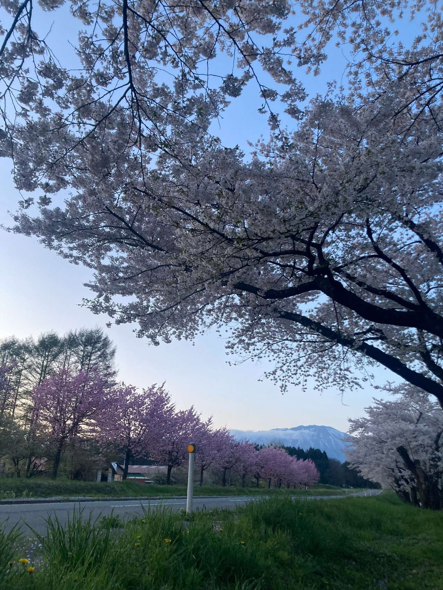
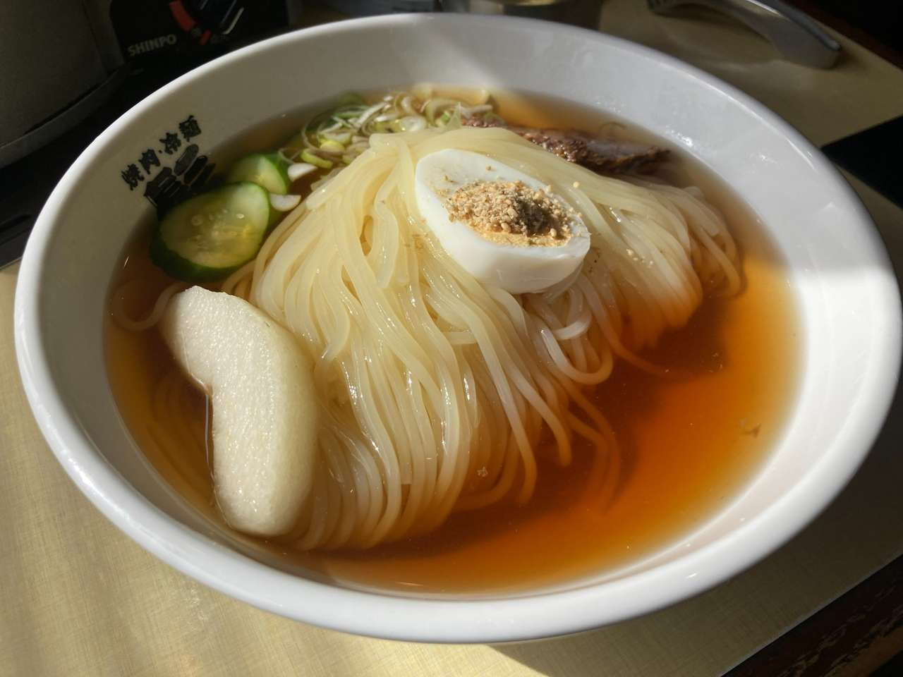
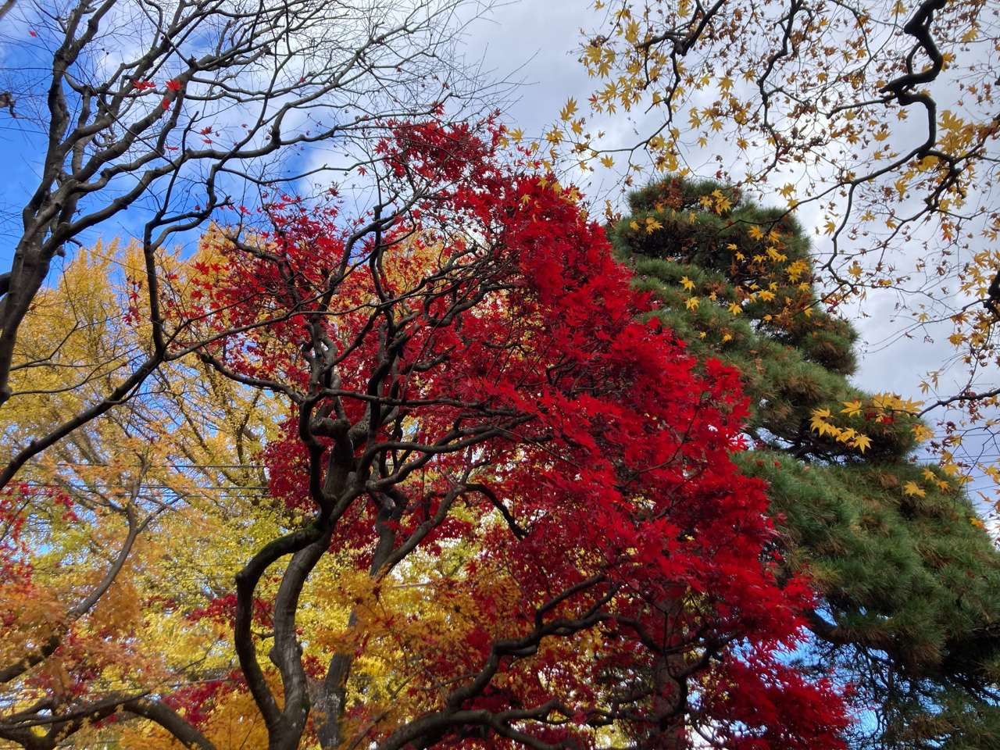
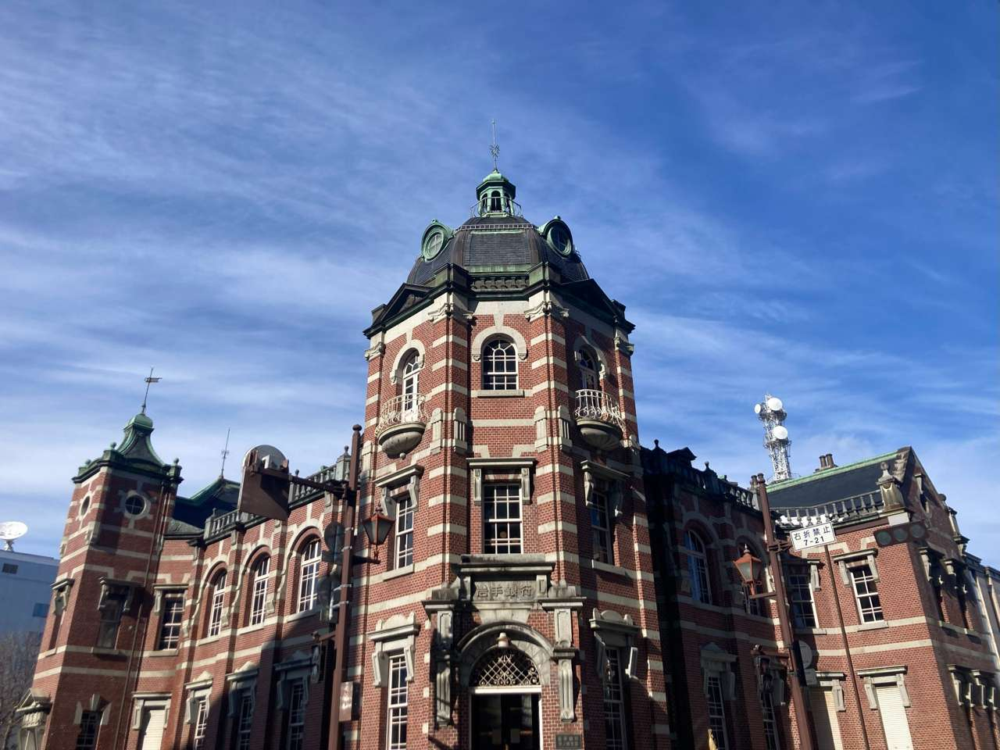
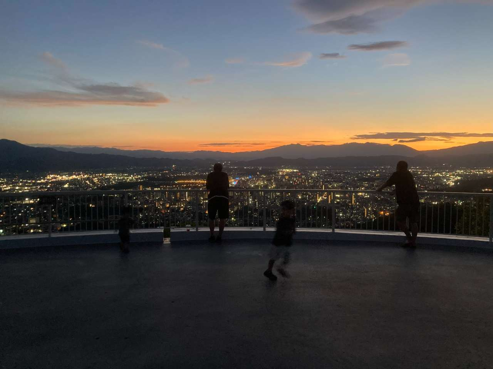

春

盛岡の街中を抜けると
見えてくる春の気配
写真で巡る、盛岡の
文化・食・四季
このサイトについて
盛岡は、ゆっくりと時が流れる街です。
四季の移ろいや歴史を刻んだ建物たち
それらが静かに日常へ溶け込んでいます。
このサイトでは盛岡の文化や食そして
四季の表情を写真を通してぶらり散歩
するような感覚で紹介しています。
旅先で足を止め、ふと周囲を見渡した
ときのようなそんな穏やかな時間を
感じていただけたら嬉しく思います。
Sansa Dance Festival
さぁ、踊ろう、みんなで！
毎年8月1日～8月4日まで開催。
太鼓の音色とともに心が躍り出す！

Local Food
何てったって冷麺が一番！
盛岡に来たら食べたいご当地麺！

表情豊かな四季

盛岡の街中を抜けると
見えてくる春の気配

宵夏の風物詩さんさ踊り！
心躍る、踊りの輪へ...

夏が終わりを告げ秋めく
秋麗の盛岡 南昌荘
沈む夕日と融合する中津川
足早に帰路につく人々

大正ロマンを感じる
盛岡の玄関口。

街並みが一望できちゃう
盛岡の絶景スポット。